Geological Mapping
Geology & Soil
Dowa · Nsanje · Kasungu
4 maps
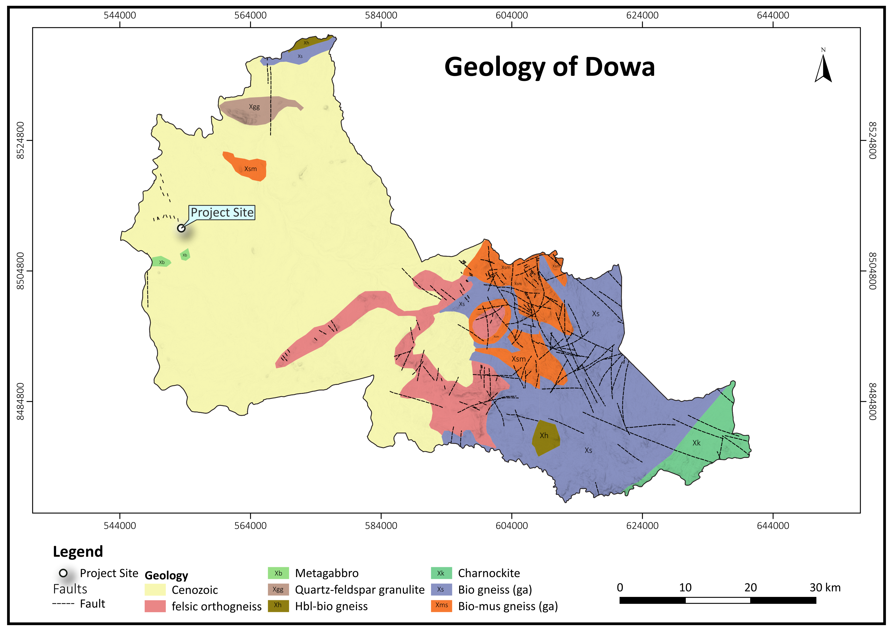
Dowa — Geology
Geological formation mapping
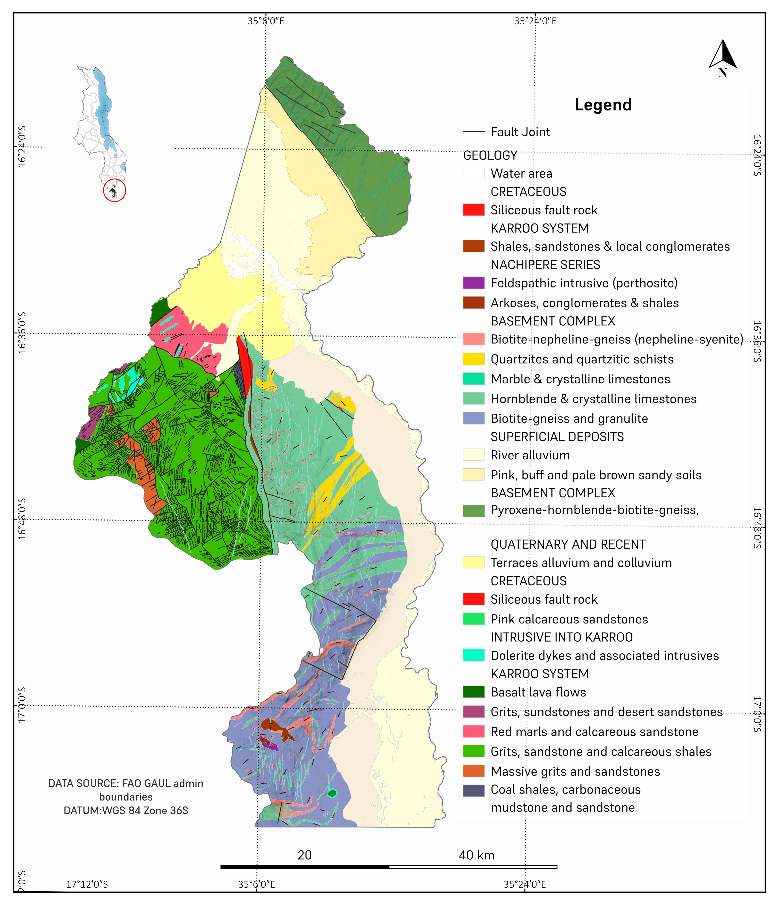
Nsanje — Geological Map
Geological formation mapping
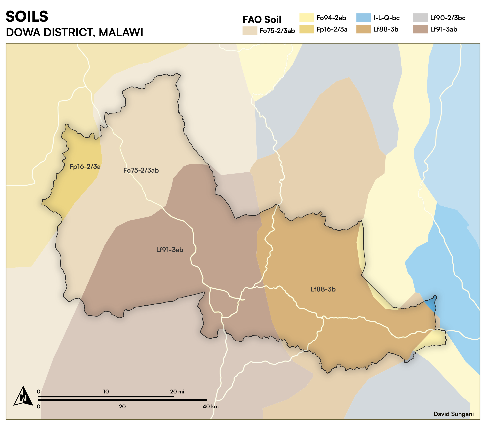
Dowa — Soil Classification
Soil type distribution
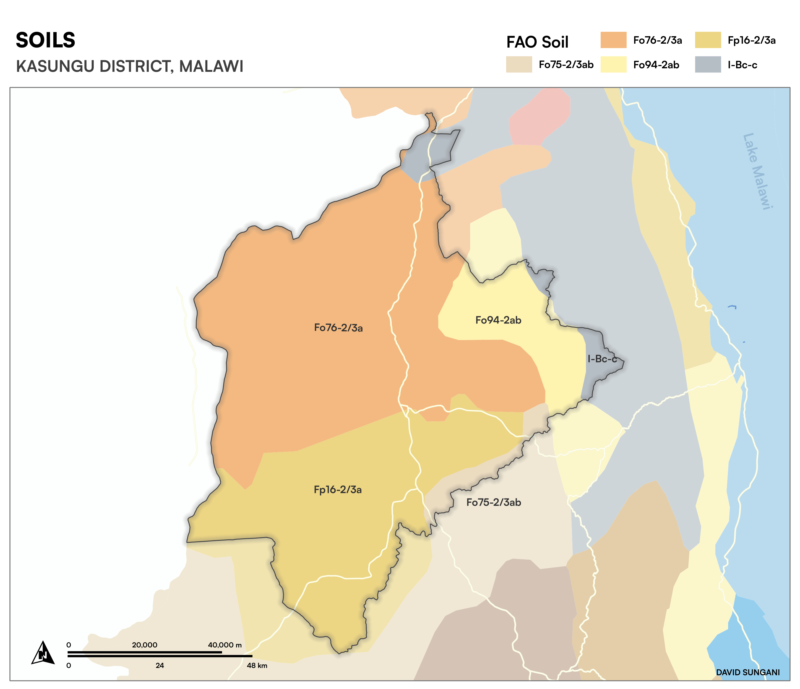
Kasungu — Soil Classification
Soil type distribution
Shire Basin Geo-Hydrological Analysis
Hydrology
Shire Basin, Malawi
4 maps
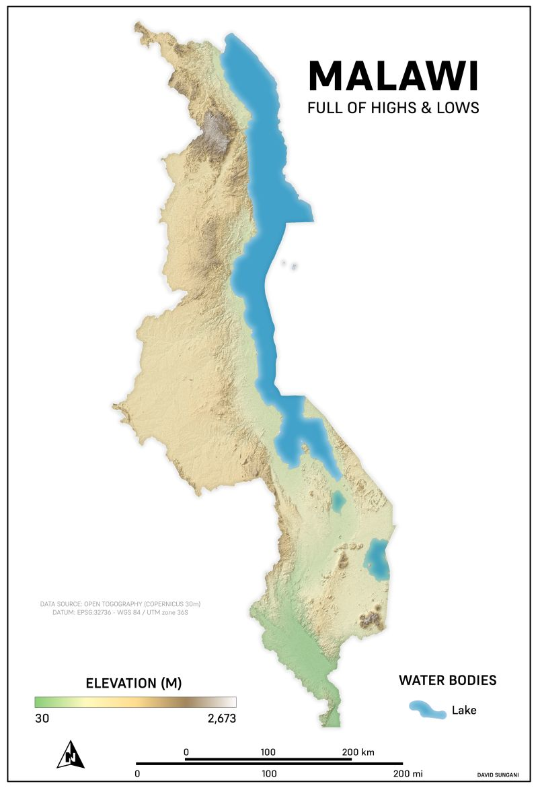
Elevation of Malawi
Digital Elevation Model (DEM)
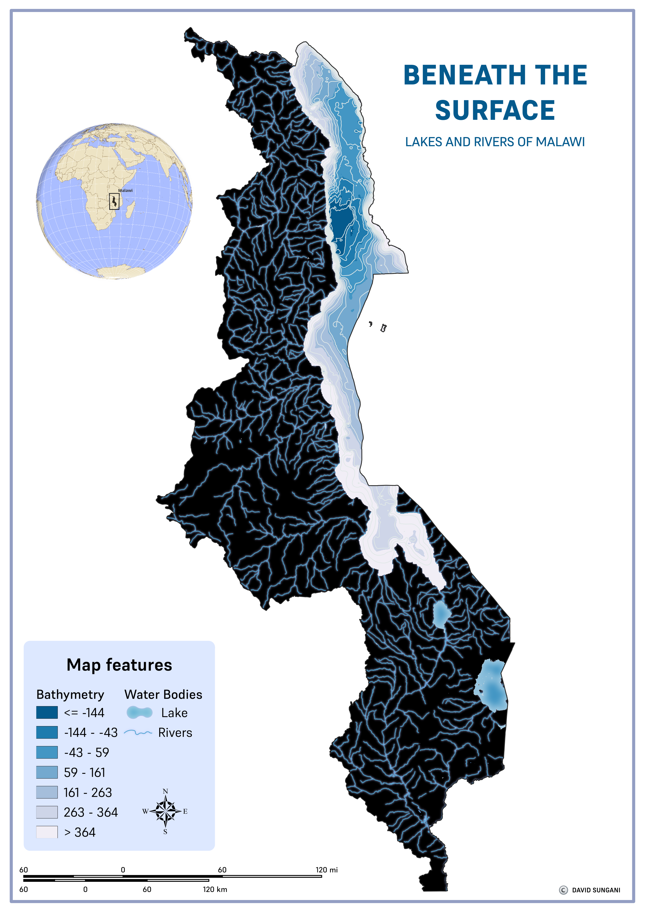
Water Resources — Malawi
Surface water distribution
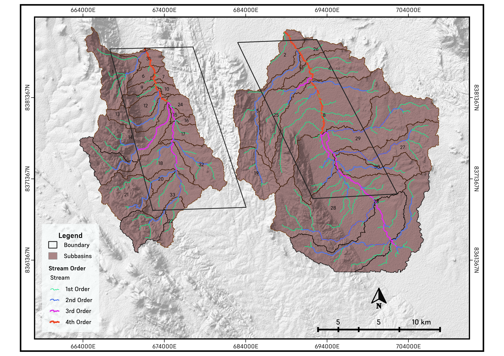
Drainage Analysis
Stream network & watershed delineation

Southern East Africa
Regional hydrological context
Groundwater Potential Zone Mapping
Hydrogeology
Ntcheu, Malawi
2 maps
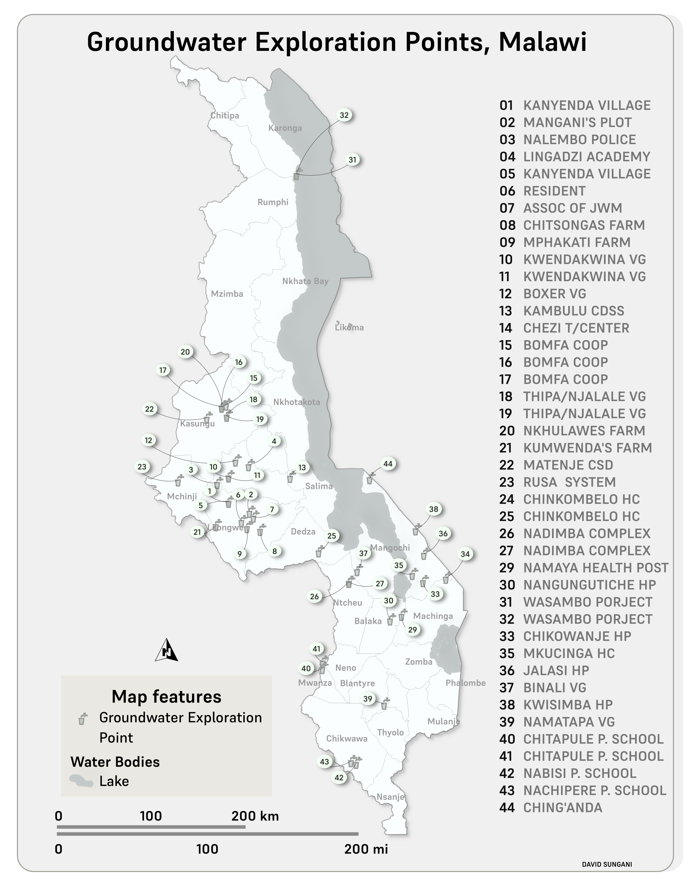
Groundwater Potential Zones
Multi-criteria groundwater suitability

Kasungu District
District reference map
Drought Severity & Vegetation Analysis
Remote Sensing
Malawi
2 maps
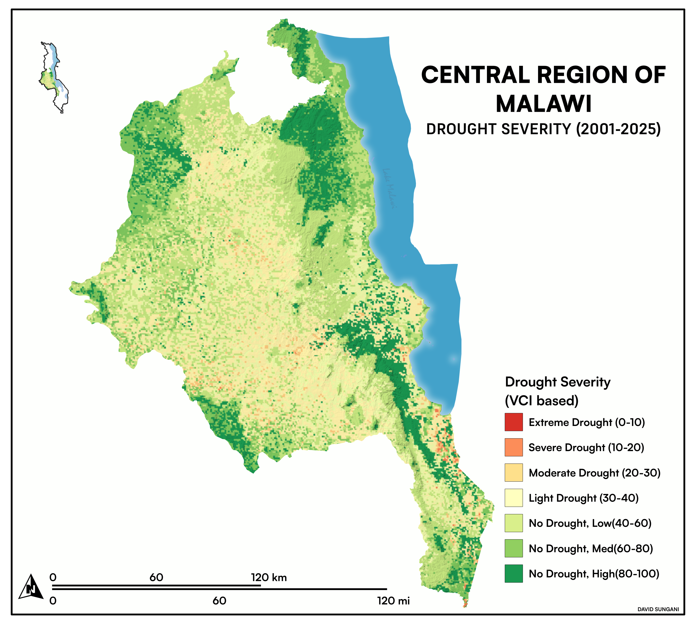
Drought Severity Analysis
SPI-based drought classification
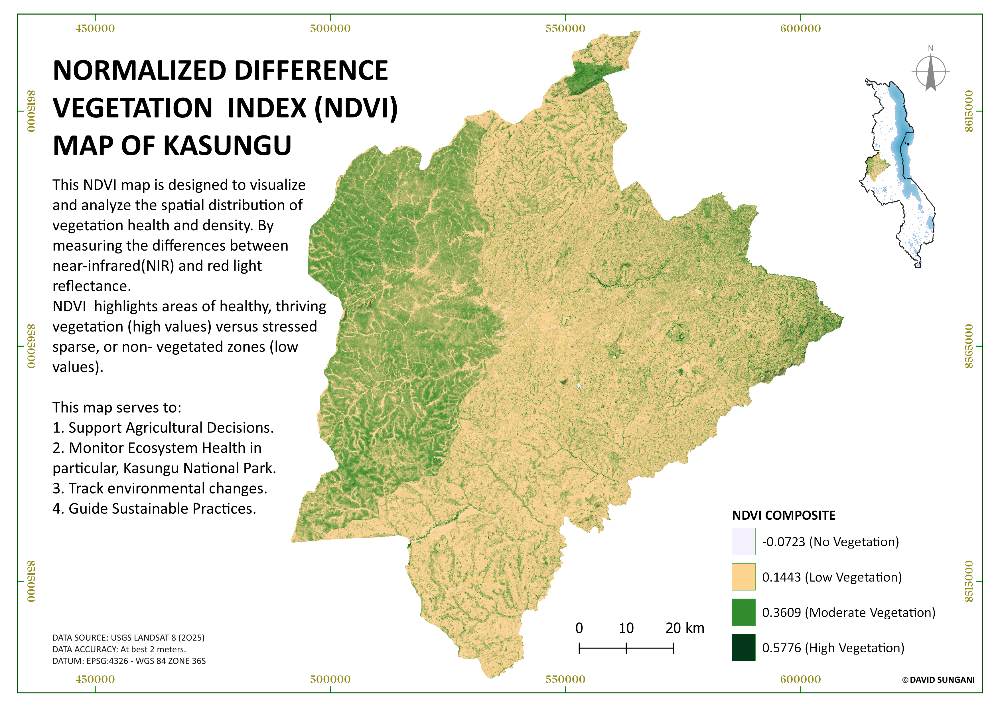
NDVI — Vegetation Index
Normalised Difference Vegetation Index
Multi-Criteria Overlay Analysis
GIS Analysis
India
1 map
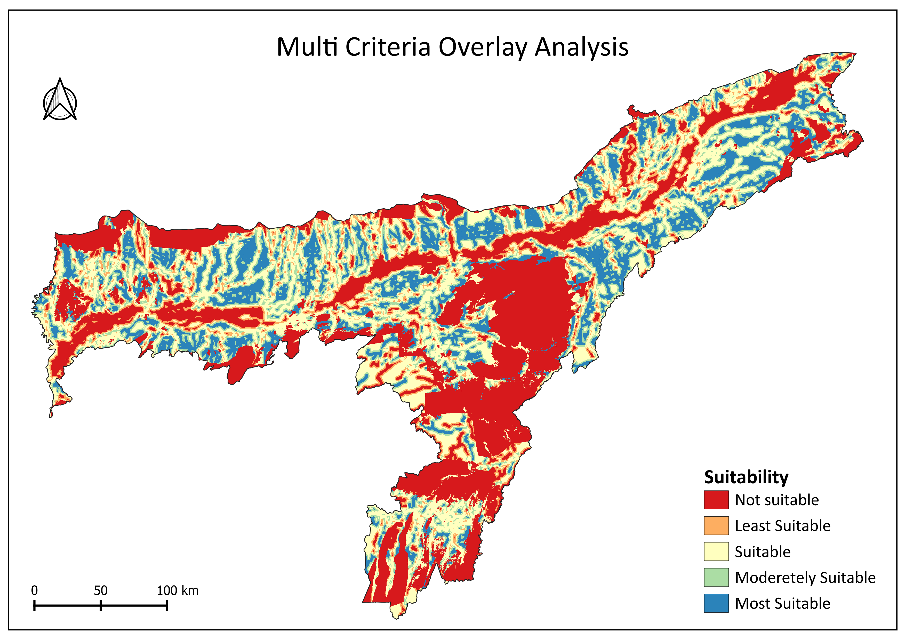
Multi-Criteria Decision Analysis
Weighted overlay — site suitability
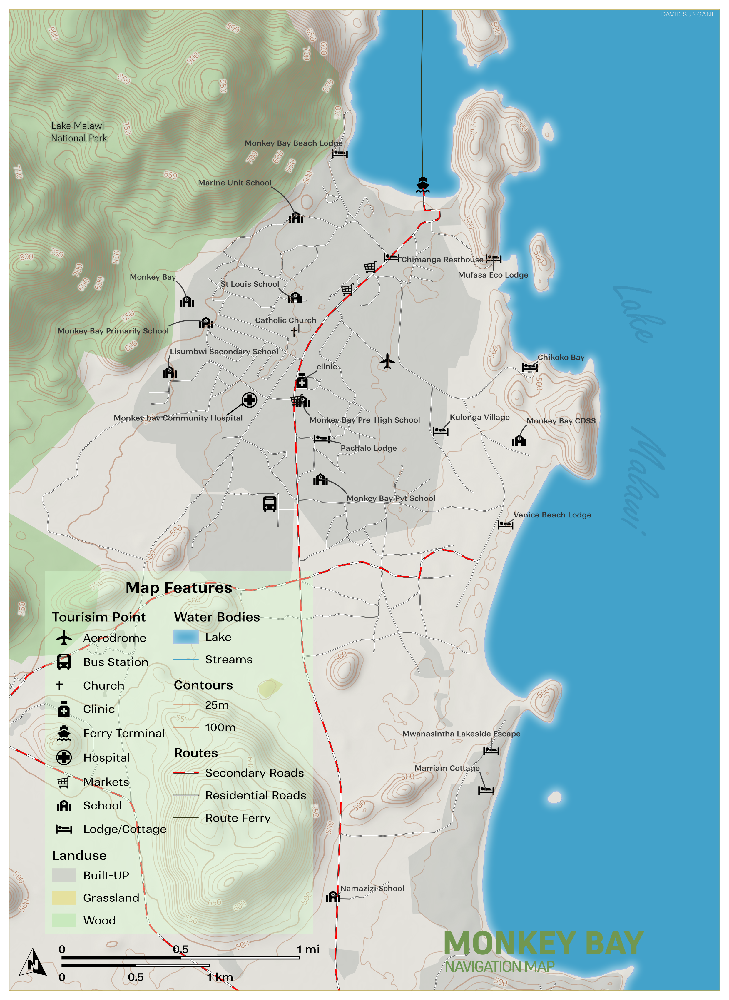
Navigation Map
Reference & cartographic output
Soil & Water Assessment Tool (SWAT)
Watershed Modelling
Makande Watershed, Malawi
13 maps
Hydroclimatic Analysis
Climate & Hydrology
Lilongwe, Malawi
5 maps
Land Use / Land Cover Change Detection
Change Detection
Mzimba TAs, Malawi
6 maps